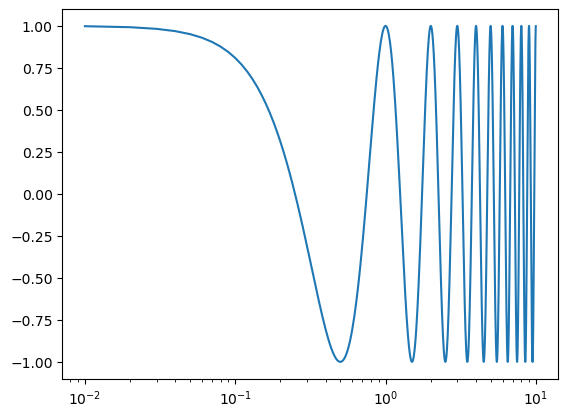
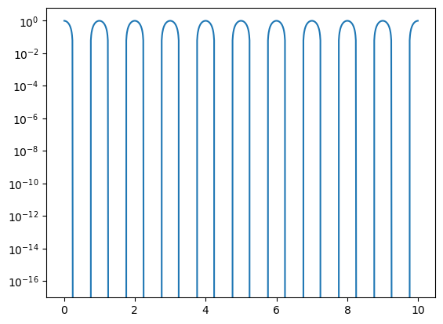
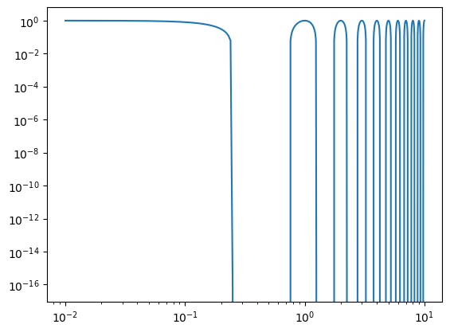
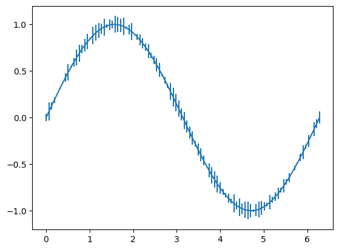
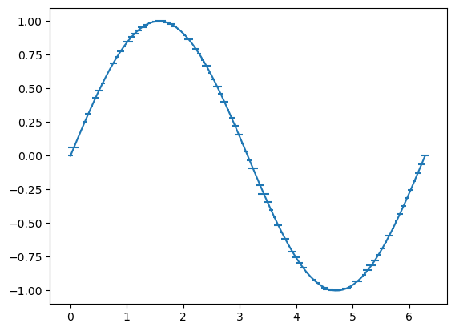
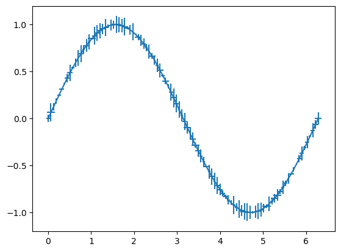
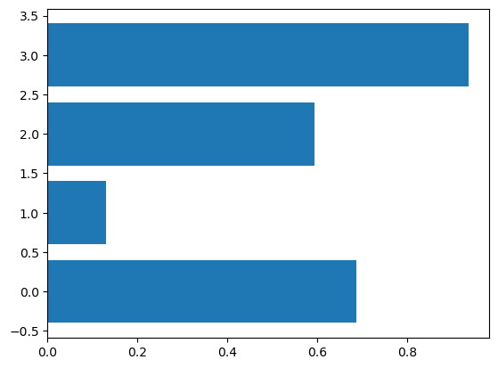
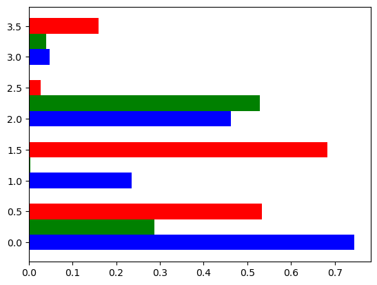
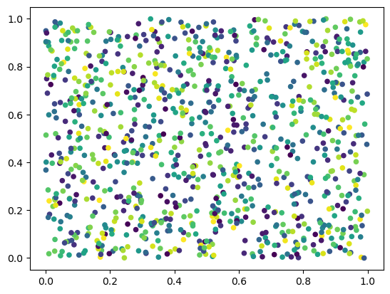
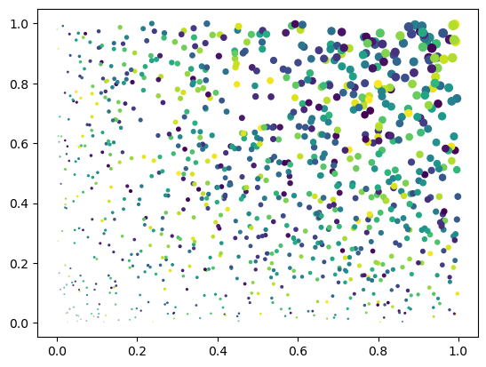

handob ch6#
%matplotlib inline
import numpy as np
import matplotlib.pyplot as plt
data = np.linspace(0, 9, 10)
plt.plot(data)
plt.show()

t = np.arange(0.01, 10, 0.01)
plt.semilogx(t, np.cos(2 * np.pi * t))
plt.show()

plt.semilogy(t, np.cos(2 * np.pi * t))
plt.show()

plt.loglog(t, np.cos(2 * np.pi * t))
plt.show()

err graph#
x = np.linspace (0, 2 * np.pi, 100)
y = np.sin(x)
ye = np.random.rand(len(x))/10
plt.errorbar(x, y, yerr = ye)
plt.show()

xe = np.random.rand(len(x))/10
plt.errorbar(x, y, xerr = xe)
plt.show()

plt.errorbar(x, y, xerr = xe, yerr = ye)
plt.show()

bar graph#
x = np.arange(4)
y = np.random.rand(4)
print(x)
print(y)
plt.bar(x, y)
plt.show()
[0 1 2 3]
[0.55075345 0.22452419 0.53999172 0.72518894]
x = np.arange(4)
y = np.random.rand(3, 4)
print(x)
# assume 4 bar first as above
# within each bar we have 3 bars
print(y)
plt.bar(x + 0.00, y[0], color = 'b', width = 0.25)
plt.bar(x + 0.25, y[1], color = 'g', width = 0.25)
plt.bar(x + 0.50, y[2], color = 'r', width = 0.25)
plt.show()
[0 1 2 3]
[[0.00424436 0.54603798 0.00628332 0.32169783]
[0.9665594 0.66715031 0.90860328 0.64676632]
[0.19741728 0.57734805 0.37815042 0.10867884]]
# cannot assume x = np.arange(4)
x = np.arange(5)
y = np.random.rand(3, 5)
print(x)
# assume 4 bar first as above
# within each bar we have 3 bars
print(y)
plt.bar(x + 0.00, y[0], color = 'b', width = 0.25)
plt.bar(x + 0.25, y[1], color = 'g', width = 0.25)
plt.bar(x + 0.50, y[2], color = 'r', width = 0.25)
plt.show()
[0 1 2 3 4]
[[0.20349484 0.31582353 0.97954894 0.25794605 0.54254501]
[0.82063266 0.80346981 0.16335945 0.86506939 0.63504002]
[0.35920699 0.94777215 0.50982312 0.13308333 0.23153344]]
# cannot assume x = np.arange(4)
x = np.arange(5)
y = np.random.rand(4, 5)
print(x)
# assume 4 bar first as above
# within each bar we have 3 bars
print(y)
plt.bar(x + 0.00, y[0], color = 'b', width = 0.2)
plt.bar(x + 0.2, y[1], color = 'g', width = 0.2)
plt.bar(x + 0.4, y[2], color = 'r', width = 0.2)
plt.bar(x + 0.6, y[3], color = 'y', width = 0.2)
plt.show()
[0 1 2 3 4]
[[0.51835375 0.31031651 0.21370944 0.36026364 0.55095361]
[0.06034901 0.93084997 0.54606219 0.46643955 0.78300131]
[0.98590309 0.13269467 0.75683539 0.05399827 0.52439763]
[0.8406362 0.49766377 0.31501999 0.22513246 0.94192367]]
x = np.arange(4)
y = np.random.rand(4)
plt.barh(x, y)
plt.show()

y = np.random.rand(3, 4)
plt.barh(x + 0.00, y[0], color = 'b', height=0.25)
plt.barh(x + 0.25, y[1], color = 'g', height=0.25)
plt.barh(x + 0.50, y[2], color = 'r', height=0.25)
plt.show()

scatter plot#
N = 1000
x = np.random.rand(N)
y = np.random.rand(N)
colors = np.random.rand(N)
size = (20)
plt.scatter(x, y, s=size, c=colors, alpha=1)
plt.show()

N = 1000
x = np.random.rand(N)
y = np.random.rand(N)
colors = np.random.rand(N)
size = (50 * x * y)
plt.scatter(x, y, s=size, c=colors, alpha=1)
plt.show()
